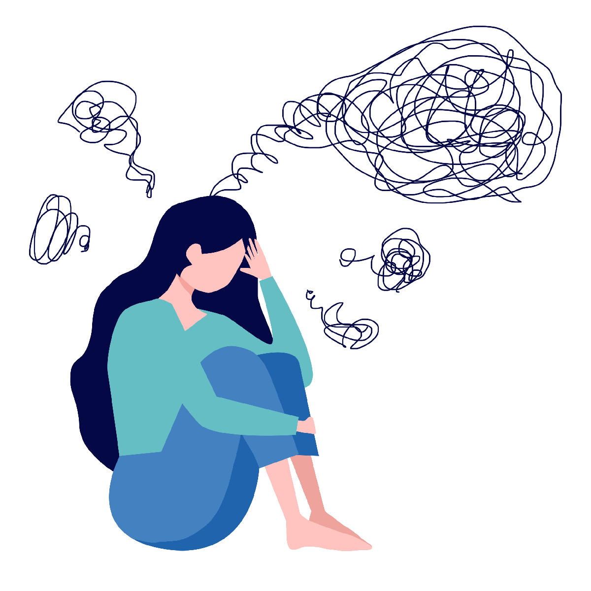

Pokud se cítíte přetíženi, smutní nebo v těžké situaci, nezůstávejte v tom sami. Jsme tady, abychom vám nabídli podporu a pomoc, kterou potřebujete.
Co nabízíme:
Konzultace s odborníky
Telefonickou a online podporu
Pomoc při stresu, úzkosti, depresích a dalších problémech
Nejste v tom sami. Kontaktujte nás, pokud hledáte podporu nebo radu. Jsme tu pro vás.

Nevíte si rady co dál ? ZAVOLEJTE NÁM !
☎️ 116 111
Tato telefoní linka je zcela bezplatná , funguje 24h s vyjímkou státních svátků.
PEČUJ O SEBE
Dlouhodobá péče o sebe přispívá k nastavení a udržení psychické pohody. Také dlouhodobou pomoc můžeš mít ve vlastních rukou a spoustu věcí zvládnout sám/a.
Přesto je dobré se o ně dělit v rozhovorech nebo dělat některé aktivity společně. Kdy využít dlouhodobou pomoc?
- Když máš zkušenost se sebevražednými sklony v minulosti a obáváš se, že by se mohly vrátit.
- Když se chceš dlouhodobě cítit lépe.
- Když se nyní cítíš na dně a chceš udělat něco pro to, aby se to v budoucnu nezhoršilo.
- Také je možné, že máš kolem sebe někoho, kdo se s podobnými potížemi potýká a hledáš, jakou pomoc nabídnout.
- Kdy sáhnout po dlouhodobé péči? Kdykoliv. Zařaď ji do svého života jako pravidelnou činnost. Psychická péče, tělesná aktivita, setkávání se s lidmi a udržování vztahů nebo zdravý spánkový režim jsou pro dlouhodobé zdraví zásadní.